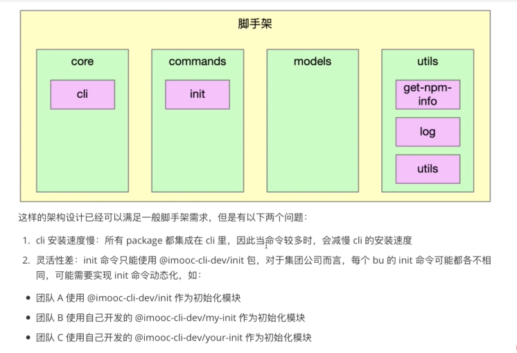
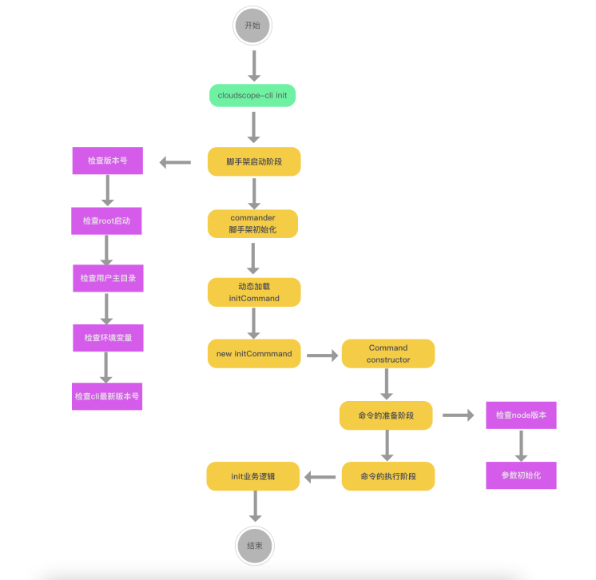
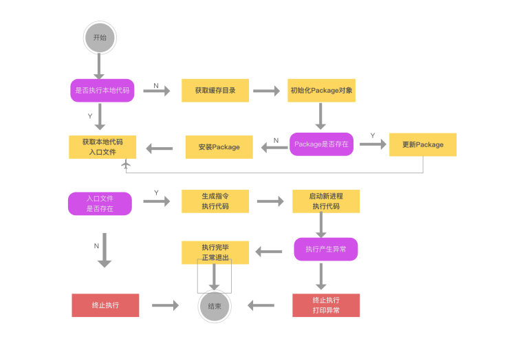
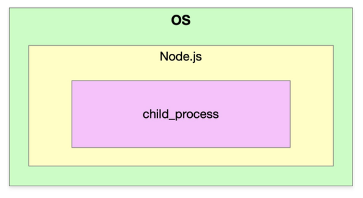
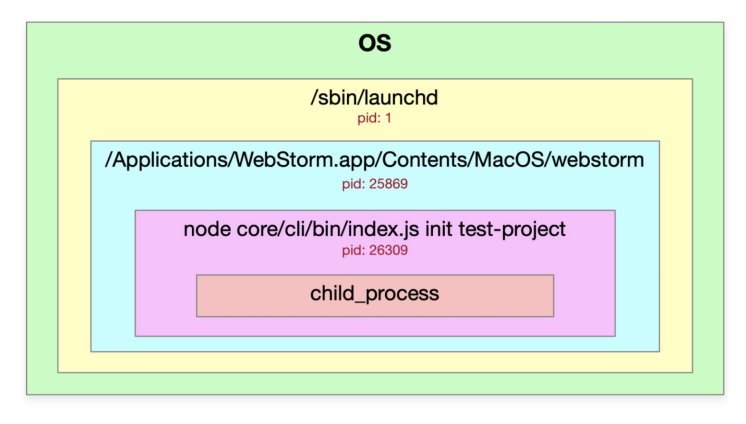
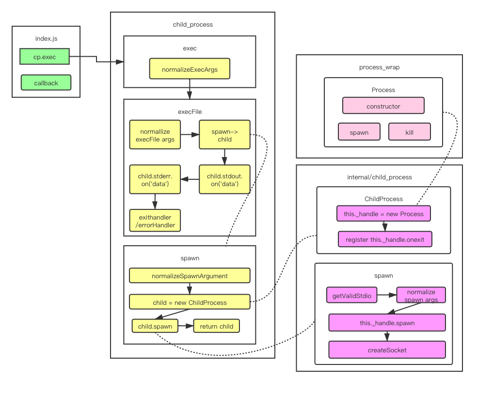

Week4-脚手架命令注册和执行过程开发
本Week代码提交支：lesson04
第一章：本周导学
1-1 本周整体内容介绍和学习方法
标题
- 基于Commander完成脚手架命令注册和命令执行过程开发
收获
- 如何设计高性能脚手架
- Node多线程开发
- javascript面向对象编程的实战技巧
内容
- 图解高性能脚手架架构设计方法
- 封装通用的Package和Command类
- 基于缓存 + Node 多进程 实现动态命令加载和执行
- 将业务逻辑和脚手架逻辑彻底解耦
加餐
Node多进程开发进阶--child_process源码解析
- 深入Node源码看清spawn/exec/execFile/fork的本质区别，彻底搞懂Node多进程原理。
第二章：imooc-cli脚手架命令注册
2-1 imooc-cli脚手架初始化+全局参数注册
(本节有代码编写)
本节的主要内容为使用commander这个库在全局添加注册命令
- cd core/cli
- npm i -S commander
// core/cli/lib/index 添加全局注册命令方法
//命令注册
function registerCommand(){
program
.name(Object.keys(pkg.bin)[0])
.usage('<command> [options]')
.version(pkg.version)
.option('-d, --debug', '是否开启调试模式', false);
// 开启debug模式
program.on('option:debug',function(){
if(program.opts().debug){
process.env.LOG_LEVEL='verbose'
}else{
process.env.LOG_LEVEL='info'
}
log.level = process.env.LOG_LEVEL
})
// 对未知命令监听
program.on('command:*',function(obj){
const availableCommands = program.commands.map(cmd => cmd.name())
console.log(colors.red('未知的命令：'+obj[0]))
if(availableCommands.length > 0){
console.log(colors.red('可用命令为：'+availableCommands.join(',')))
}
})
program.parse(program.argv)
if(program.args && program.args.length < 1) {
program.outputHelp();
console.log()
}
}
2-2 imooc-cli脚手架命令注册
(本节有代码编写)
本节的主要内容为添加第一个comman操作：'init',并在commands文件夹下创建新的init包
// core/cli/lib/index
......
const init = require('@cloudscope-cli/init')
......
program
.command('init [projectName]')
.option('-f,--force','是否强制更新项目')
.action(init)
......
第三章：高性能脚手架架构设计和缓存结构设计
3-1 当前imooc-cli脚手架架构痛点分析
**
(本节无代码编写)
当前的代码架构如图：

3-2 高性能脚手架架构设计
(本节无代码编写)
对以上架构(之前代码编写)的主要优化点有以下三个方面
- 将init命令做成了一个动态加载的形式
- 动态加载的脚手架通过缓存形式进行存储：执行哪个命令下载哪个命令
- 动态加载的时候，通过node多进程进行执行：深挖cpu性能

3-3 脚手架命令动态加载功能架构设计
(本节无代码编写)

上图架构初看有些难度，在代码编写之后再去回顾，会有更深理解。
本节简单讲述了两点：
- require加载文件的用法:
- require('/xxx/yyy/index.js') ---- 加载绝对路径
- require('./index.js')----加载相对路径
- require('fs') ---- 加载内置模块
- require('npmlog') ---- 加载第三方包
- node执行模块两种方式
- node 执行文件: node core/cli/bin/index.js
- node -e '字符串'：node -e "require(./core/cli/bin/index.js)"
第4章 通用 npm 模块类 Package 封装
4-1 脚手架命令本地调试功能支持
(本节有代码编写)
通过前面画图了解，我们要实现的第一步是initCommand的动态命令加载,即3-3章节所示图。 是否执行本地代码，我们通过一个属性来进行标识：targetPath
//core/cli/lib/index.js
program.
.option('-tp, --targetPath <targetPath>','是否指定本地调试文件路径','')
//指定targetPath
program.on('option:targetPath',function(){
process.env.CLI_TARGET_PATH = program.opts().targetPath
})
// commands/init/lib/index.js
'use strict';
function init(projectName,options,command) {
console.log('init',projectName,command.opts().force,process.env.CLI_TARGET_PATH)
}
module.exports = init;
本节需要注意的一点是如果commander版本低于7.0.0，那么 program.action()中传入的参数为两个。 7.0.0版本以上的传入的参数为三个(name.options,cmd)
另外，访问targetPath这个参数的时候，需要program.opts().targetPath访问。
4-2 动态执行库exec模块创建
(本节有代码编写)
core下新建包文件： lerna create @cloudscope-cli/exec core/ 然后在core/cli/lib/index.js文件中将exec包引入，将action(init)此处改为action(exec)
4-3 创建npm模块通用类Package
(本节有代码编写)
首先讲解了exec模块逻辑
- targetPath -> modulePath
- modulePath -> Package(npm模块)
- Package.getRootFile(获取入口文件)
- Package.update / Package.install
代码实现：
- 在model文件下创建新的模块Package：lerna create @cloudscope-cli/package
- 在core/exec/lib/index.js文件中引入：const Package = require('@cloudscope-cli/package')
4-4 Package类的属性、方法定义及构造函数逻辑开发
(本节有代码编写)
本节主要有三处代码讲解
- core/exec中创建一个Package对象
- model/package中Package类的构造方法
- utils/utils中添加isObject方法：判断一个属性是否为对象
代码分别如下：
// core/exec/lib/index.js
'use strict';
const Package = require('@cloudscope-cli/package')
const log = require('@cloudscope-cli/log')
const SETTINGS = {
init: '@cloudscope-cli/init'
}
function exec() {
// 1. targetPath -> modulePath
// 2. modulePath -> Package(npm模块)
// 3. Package.getRootFile(获取入口文件)
// 4. Package.update / Package.install'
let targetPath = process.env.CLI_TARGET_PATH
const homePath = process.env.CLI_HOME_PATH
let storeDir ='';
let pkg;
log.verbose('targetPath', targetPath);
log.verbose('homePath', homePath);
const cmdObj = arguments[arguments.length - 1];
const cmdName = cmdObj.name();
const packageName = SETTINGS[cmdName];
const packageVersion = 'latest';
pkg = new Package({
targetPath,
storeDir,
packageName,
packageVersion
})
console.log(pkg)
}
module.exports = exec;
//models/package/lib/index.js
'use strict';
const { isObject } = require('@liugezhou-cli-dev/utils');
class Package {
constructor(options){
if( !options){
throw new Error('Package类的options参数不能为空！')
}
if( !isObject(options) ){
throw new Error('Package类的options参数必须为对象！')
}
// package路径
this.targetPath = options.targetPath
// package的存储路径
this.storeDir = options.storeDir
// package的name
this.packageName = options.packageName
// package的version
this.packageVersion = options.packageVersion;
}
// 判断当前Package是否存在
exists(){}
// 安装Package
install(){}
//更新Package
update(){}
//获取入口文件路径
getRootFilePath(){}
}
module.exports = Package;
//utils/utils/lib/index.js
'use strict'
function isObject(obj){
return Object.prototype.toString.call(obj).slice(8,-1) === 'Object'
}
module.exports = {
isObject
}
4-5 Package类获取入口文件路径功能开发（pkg-dir应用+解决不同操作系统路径兼容问题）
(本节有代码编写)
本节主要实现models/package/lib/index.js中获取入口文件路径的方法实现getRootfile()
思路：
- 获取package.json的所在目录--通过安装pkg-dir库
- 读取package.json
- 寻找main/lib
- 路径的兼容macOS/windows --新建包：utils/format-path，且新建路径兼容方法
核心代码为:
//core/exec/lib/index.js
…………
// 1. 获取package.json所在目录
const dir = pkgDir(targetPath);
if (dir) {
// 2. 读取package.json
const pkgFile = require(path.resolve(dir, 'package.json'));
// 3. 寻找main/lib
if (pkgFile && pkgFile.main) {
// 4. 路径的兼容(macOS/windows)
return formatPath(path.resolve(dir, pkgFile.main));
}
}
return null;
…………
'use strict';
const path = require('path')
function formatPath(p) {
const sep = path.sep;
if(p && typeof p === 'string'){
if(sep !=='/'){
return p.replace(/\\/g,'/')
}
}
return p
}
module.exports = formatPath;
4-6 利用npminstall库安装npm模块
(本节有代码编写)
本节实现的内容为exec中的install方法,通过npminstall这个库。 使用之前现在测试项目下使用之：测试代码。
const npminstall = require('npminstall')
const path = require('path')
const userHome = require('user-home')
npminstall({
root: path.resolve(userHome,'.cli-test'), //模块路径
storeDir: path.resolve(userHome,'.cli-test','node_modules') ,
registry:'https://registry.npmjs.org',
pkgs:[
{name:'foo',version:'~1.0.0'}
]
})
- 首先，我们的项目在开发过程中可能会有错误，有的需要去看执行栈，有的不需要，因此我们在core/cli/lib/index中的core方法中，catch语句中加入如下代码(debug模式下显示执行栈错误)
if(program.opts().debug){
console.log(e)
}
2.在core/exec/lib/index.js文件中，我们修改代码如下(主要加入了如果不存在targetPath的逻辑梳理)：
'use strict';
const path = require('path') //新添加
const Package = require('@cloudscope-cli/package')
const log = require('@cloudscope-cli/log')
const SETTINGS = { //新添加
init: '@imooc-cli/init'
}
const CATCH_DIR = 'dependencies' //新添加
async function exec() {
let targetPath = process.env.CLI_TARGET_PATH
const homePath = process.env.CLI_HOME_PATH
let storeDir ='';
let pkg;
log.verbose('targetPath', targetPath);
log.verbose('homePath', homePath);
const cmdObj = arguments[arguments.length - 1];
const cmdName = cmdObj.name();
const packageName = SETTINGS[cmdName];
const packageVersion = 'latest';
if(!targetPath){
//生成缓存路径
targetPath = path.resolve(homePath,CATCH_DIR); //新添加
storeDir = path.resolve(targetPath,'node_modules') //新添加
log.verbose('targetPath:',targetPath) //新添加
log.verbose('storeDir:',storeDir) //新添加
pkg = new Package({ //新添加
targetPath,
storeDir,
packageName,
packageVersion
});
if(await pkg.exists()){ //新添加
// 更新package
log.verbose('更新package')
await pkg.update();
}else{
// 安装package
await pkg.install();
}
}else{
pkg = new Package({
targetPath,
packageName,
packageVersion
})
const rootFile = pkg.getRootFilePath();
if(rootFile){ //新添加
require(rootFile).apply(null,arguments);
}
}
}
module.exports = exec;
- model/package包中文件主要加入了安装package这个方法,使用了npminstall这个库。
//models/package/lib/ibdex.js
async install(){
await this.prepare()
return npminstall({
root: this.targetPath,
storeDir: this.storeDir,
registry:getDefaultRegistry(),
pkg:{
name:this.packageName,
version:this.packageVersion
}
})
}
4-7 Package类判断模块是否存在方法开发
本节的主要内容是实现package/lib/index.js中的exists方法，代码实现如下：
…………
// package的缓存目录前缀
this.cacheFilePathPrefix = this.packageName.replace('/', '_')
…………
get cacheFilePath() {
return path.resolve(this.storeDir,`_${this.cacheFilePathPrefix}@${this.packageVersion}@${this.packageName}`)
}
async prepare(){
if(this.storeDir && !pathExists(this.storeDir)){
fse.mkdirpSync(this.storeDir)
}
if(this.packageVersion === 'latest'){
this.packageVersion = await getNpmLatestVersion(this.packageName);
}
}
async exists(){
if(this.storeDir){
await this.prepare()
return pathExists(this.cacheFilePath);
}else{
return pathExists(this.targetPath);
}
}
4-8 Package类更新模块逻辑开发
(本节有代码编写)
本节内容主要为如果Package包有升级，那么需要去更新，主要实现代码为：
// models/package/lib/index.js
…………
getSpecificCacheFilePath(packageVersion){
return path.resolve(this.storeDir,`_${this.cacheFilePathPrefix}@${packageVersion}@${this.packageName}`)
}
//更新Package
async update(){
//获取最新的npm模块版本号
const latestPackageVersion = await getNpmLatestVersion(this.packageName);
// 查询最新版本号对应的路径是否存在
const latestFilePath = this.getSpecificCacheFilePath(latestPackageVersion)
// 如果不存在，则直接安装最新版本
if(!pathExists(latestFilePath)){
await npminstall({
root:this.targetPath,
storeDir:this.storeDir,
registry:getDefaultRegistry(),
pkgs:[{
name:this.packageName,
version:latestPackageVersion
}
]
})
this.packageVersion = latestPackageVersion
}else{
this.packageVersion = latestPackageVersion
}
return latestFilePath;
}
4-9 Package类获取缓存模块入口文件功能改造
//获取入口文件路径
getRootFilePath(){
function _getRootFile(targetPath) {
// 1. 获取package.json所在目录
const dir = pkgDir(targetPath);
if (dir) {
// 2. 读取package.json
const pkgFile = require(path.resolve(dir, 'package.json'));
// 3. 寻找main/lib
if (pkgFile && pkgFile.main) {
// 4. 路径的兼容(macOS/windows)
return formatPath(path.resolve(dir, pkgFile.main));
}
}
return null;
}
if (this.storeDir) {
return _getRootFile(this.cacheFilePath);
} else {
return _getRootFile(this.targetPath);
}
}
ps：关于项目的代码以上就结束了，代码提交至：lesson04
第五章：预备知识：Node 多进程开发入门
5-1 进程的基本概念(讲解在操作系统中如何查看进程的嵌套关系)
官方文档中文版： http://nodejs.cn/api/child_process.html
进程：进程(Process)是计算机中的程序关于某数据集合上的一次运行活动，是系统进行资源分配和调度的基本单元，是操作系统结构的基础。 概念主要两点：
- 第一，进程是一个实体。每一个进程都有它自己的地址空间。
- 第二，进程是一个“执行中的程序”，存在嵌套关系

Node进程存在的感知： 终端中输入：ps -ef | grep node 命令。
- UID是当前用户获取权限的ID
- PID是当前进程ID
- PPID是当前进程ID的父ID
使用webstorm调试一个node程序的图示如下：

5-2 child_process异步方法使用教程（exec&execFile）
child_process用法:
异步用法
- exec
- execFile
- fork
- spawn
同步用法
- execSync
- execFileSync
- spawnSync
//exec使用方法demo
const cp = require('child_process')
cp.exec('ls -al',function(err,stdout,stderr){
console.log(err)
console.log(stdout)
console.log(stderr)
})
//execFile使用方法demo
cp.execFile('ls',['-al'],function(err,stdout,stderr){
console.log(err)
console.log(stdout)
console.log(stderr)
})
小结：exec和execFile在输出上看不出来区别。
- exec主要用来执行一个shell命令，本质是execFile，只是参数不同，不支持传入arguments参数。
- execFile只能执行一个文件，且加入一些命令，不能使用管道符。
5-3 child_process spawn用法以及与exec&execFile的区别
exec、execFile、fork底层都是使用的spawn。 spawn使用的时候，没有回调，需要监听获取结果。
新建一个test.shell文件的时候，如果要读取这个文件，那么需要添加权限：chmod +x test.shell
const cp = require('child_process')
const path = require('path')
const child = cp.spawn(path.resolve(__dirname,'test.shell'),['-al','-bl'],{
cwd:path.resolve('..')
});
// console.log(child.pid,process.pid)
child.stdout.on('data',function(chunk){
console.log('stdout',chunk.toString())
})
child.stderr.on('data',function(chunk){
console.log('stderr',chunk.toString())
})
spawn:耗时任务(比如 npm install)： 不断打印日志 exec/execFile:耗时、开销比较小的任务: 一次性返回结果。 fork：多进程、多线程的下载。
5-4 child_process fork用法及父子进程通信机制讲解
fork主要是使用node来执行我们的命令。 fork会执行两个进程 主进程与子进程。 fork的本质也是调用spawn。
// index.js
const cp = require('child_process')
const path = require('path')
const child = cp.fork(path.resolve(__dirname,'child.js'))
child.send('hello child process！',()=>{
// child.disconnect()
})
console.log('main pid:',process.pid)
child.on('message',msg =>{
console.log(msg)
child.disconnect()
})
//child.js
console.log('child pid：',process.pid)
process.on('message', (msg)=>{
console.log(msg)
})
process.send('hello main process!')
5-5 child_process同步方法使用教程
- execSync
- execFileSync
- spawnSync
const cp = require('child_process')
//execSync
const ret = cp.execSync('ls -al | grep index.js')
console.log(ret.toString())
//execFileSync
const ret2 = cp.execFileSync('ls', ['-al'])
console.log(ret2.toString())
//spawnSync
const ret3 = cp.spawnSync('ls',['-al'])
console.log(ret3.stdout.toString())
第六章 基于 Node 多进程构建高性能脚手架
6-1 通过脚手架命令Command类封装
(本节有代码编写)
- 在 model文件夹下安装Command包：lerna create @cloudscope-cli/command
- 在commands/init 的package.json中引入上面新创建的包command，继承它作为它的子类。
然后我们来到新建的command包的lib/index文件中,添加如下代码(同时删除core/cli/lib/index.js中关于checNodeVersion方法的代码)：
'use strict';
const semver = require('semver')
const colors = require('colors/safe')
const LOWEST_NODE_VERSION = '12.0.0'
class Command {
constructor(argv){
this._argv = argv
let runner = new Promise((resolve,reject)=>{
let chain = Promise.resolve()
chain = chain.then(()=> this.checkNodeVersion())
chain.catch(e =>{
console.log(e.message)
})
})
}
checkNodeVersion(){
const currentNodeVersion = process.version
const lowestNodeVersion = LOWEST_NODE_VERSION
if(semver.ltr(currentNodeVersion, lowestNodeVersion)) {
throw new Error(colors.red(`cloudscope-cli 需要安装 v${lowestNodeVersion}以上版本的node.js`))
}
}
init(){
throw Error('init必须实现')
}
exec(){
throw Error('exec必须实现')
}
}
module.exports = Command;
接着，我们来到commands/init/lib/index.js文件中，进行代码的改写：
'use strict';
const Command = require('@cloudscope-cli/command')
class InitCommand extends Command {
}
// function init(projectName,options,command) {
// console.log('init',projectName,command.opts().force,process.env.CLI_TARGET_PATH)
// }
function init(argv) {
return new InitCommand(argv)
}
module.exports = init
module.exports.InitCommand = InitCommand;
这里的argv参数传递是从 exec/lib/index.js中的require传递过来的，因此参数传递修改
require(rootFile).apply(null,arguments);
//修改为
require(rootFile).call(null,Array.from(arguments));
6-2 脚手架参数初始化方法开发
(本节有代码编写)
- 首先在command包中引入log包，用于chain的catch错误打印(上节代码已更新)
- 其次，对于class Comman需要对传入的参数argv进行一个判断，
- 如果为空需要抛出异常，这里需要注意抛出的异常在core/cli/lib/index.js中并没有捕获，需要在core/exec/lib/index.js中require的这个targetPath文件进行try catch捕获。
- 对argv这个参数进行是否对数组的判断。
- 对argv是否为空数组进行判断
if(!argv){
throw new Error('argv参数不能为空')
}
if(!Array.isArray(argv)){
throw new Error('argv参数必须为数组')
}
if(argv.length < 1){
throw new Error('参数列表为空')
}
- 在chain里面实现initArgs方法：主要用来进行参数的分解，将argv最后一个参数与之前的参数装到两个参数中去。
//chain逻辑
let chain = Promise.resolve()
chain = chain.then(()=> this.checkNodeVersion())
chain = chain.then(()=> this.initArgs())
chain = chain.then(()=> this.init())
chain = chain.then(()=> this.exec())
chain.catch(e =>{
log.error(e.message)
})
initArgs(){
const len = this._argv.length - 1
this._cmd = this._argv[len].opts() //commander版本号为7.0.0需要加opts()
this._argv = this._argv.slice(0,len)
}
chain中的init方法与exec均抛出异常，需要由子类去实现：即commands/init/lib/index.js.
6-3 利用Node多进程动态执行命令（stdio的inherit属性讲解）
我们回到exec/lib/index.js中，其中之前的那行代码 require(rootFile).call(null,Array.from(arguments)); 是在当前进程中调用的，我们需要修改为在node进程中进行调用，这便是本节的重点。
我们通过本周第五章的内容，已经知道了如何使用child_process下的同步或者异步方法进行子进程的执行，这里我有两种方法可以使用
const cp = require('child_process')
// cp.fork() //这里因为fork没有回调，需要通过通信的方式来获取结果，所以这里不推荐
//之所以不用spawnSync是因为，我们在执行这里的时候是需要不断的用户交互的，需要不断的收到数据打印结果，不要一次性
const child = cp.spawn('node',['-e',code],{
cwd:process.cwd(),
stdio:'inherit' // 加入这行代码，下面的就可以注释掉了
})
// child.stdout.on('data',(chunk =>{
// }))
// child.stderr.on('data',(chunk =>{
// }))
// 当然存在错误的情况，我们还是需要添加两个监听事件
child.on('error', e =>{
log.error(e.message);
process.exit(1);
})
child.on('exit', e=>{
log.verbose('命令执行成功' + e);
process.exit(e);
})
spawn方法中的参数stdio默认值为'pipe'管道，pipe使得主进程与子进程会产生通信通道，因此需要通过on这种方式去进行监听。 stdio还有一个值为'inherit'，它将相应的stdio传给父进程或者从父进程传入。也就是说：直接将process.stdin、process.stdout、process.stderr直接和父进程进行绑定，这样就无须去监听结果，可以直接将结果打印出来。
6-4 生成Node多进程动态执行代码
通过上一节的学习，我们通过代码const args = Array.from(arguments)
const cmd = args[args.length - 1]可以知道，现在需要做的就是拼成上面spawn在执行时所需的code 我们之前的代码为 _require(rootFile).call(null,Array.from(arguments));
也就是兼容 conse code =require(rootFile).call(null,Array.from(arguments));
rootfile -> ${rootfile},难点是 Array.from(arguments)的传入。
const args = Array.from(arguments)
const cmd = args[args.length - 1] // 拿到command，且进行瘦身，对不需要的参数进行过滤
const o = Object.create(null)
Object.keys(cmd).forEach(key=>{
if(cmd.hasOwnProperty(key) && !key.startsWith('_')&& key!=='parent'){
o[key]=cmd[key]
}
})
args[args.length-1] = o
const code = `require('${rootFile}').call(null,${JSON.stringify(args)})`
注：由于我使用的commander是7.0.0的，低于此版本传入的参数为两个，但7.0.0版本传入参数为3个，因此上面的代码，我这里直接写成(不知道后续是否还会有错误)：
let args = Array.from(arguments).splice(0,2)
const code = `require('${rootFile}').call(null,${JSON.stringify(args)})`
到这里，使用node多进程执行代码的功能就完成了。
6-5 windows操作系统spawn执行命令兼容
windows操作系统与macOS关于spawn的执行是不一样的，本节解决的就是windows操作系统下的兼容 将本方法封装在utils/utils包中：通过process.platform来判断操作系统
function exec(command,args,options){
const win32 = process.platform === 'win32';
const cmd = win32 ? 'cmd': command
const cmdArgs = win32 ? ['/c'].concat(command,args) : args;
return require('child_process').spawn(cmd, cmdArgs,options || {})
}
到以上为止，我们完成了动态命令的加载和执行。
第七章 加餐：Node 进阶： child_process 源码分析
7-1 Node多进程child_process库exec方法源码执行流程分析
疑问和收获：
exec和execFile到底有什么区别？ 为什么exec/execFile/fork都是通过spawn实现的，spawn的作用到底是什么？ 为什么spawn调用后没有回调，而exec和execFile能够回调？ 为什么spawn调用后需要手动调用child.stdout.on('data',callback),这里的child.stdout/child.stderr到底是什么？ 为什么有data/error/exit/close这么多种回调，他们的执行顺序到底是怎样的？
exec源码粗略分析

在未学习exec源码之前，我们先对上面的拓扑图进行一个简单的学习，看到exec内部的执行流程 不难看到exec执行的是execlFile这个方法，且不同的地方就是传入的参数不同，而execFile执行的是spawn这个方法，且spawn这个方法调用的是node内部库的一个child_process方法。
我们在webstorm中打开一个项目
// /bin/process/index.js
const cp = require('child_process')
const path = require('path')
cp.exec('ls -al|grep node_modules ',function(err,stdout,stderr){
console.log(err)
console.log(stdout)
console.log(stderr)
})
第五行代码打断点，配置webstorm调试设置后，执行命令(我这里是liugezhou-test)，进入到exec源码
function exec(command, options, callback) {
const opts = normalizeExecArgs(command, options, callback);
return module.exports.execFile(opts.file,
opts.options,
opts.callback);
}
正如上面拓扑图画的那样，首先执行一个normalLizeExecArgs方法，然后调用execFile这个方法
function execFile(file /* , args, options, callback */) {
………………
const child = spawn(file, args, {
cwd: options.cwd,
env: options.env,
gid: options.gid,
uid: options.uid,
shell: options.shell,
windowsHide: !!options.windowsHide,
windowsVerbatimArguments: !!options.windowsVerbatimArguments
});
………………
function exithandler(code, signal) {
………………
callback(ex, stdout, stderr);
}
function errorhandler(e) {
………………
exithandler();
}
if (child.stdout) {
………………
}
if (child.stderr) {
………………
}
child.addListener('close', exithandler);
child.addListener('error', errorhandler);
return child;
}
上面代码的4行，我们看到调用了spawn方法。
function spawn(file, args, options) {
const opts = normalizeSpawnArguments(file, args, options);
const child = new ChildProcess();
……………………
child.spawn({
file: opts.file,
args: opts.args,
cwd: options.cwd,
windowsHide: !!options.windowsHide,
windowsVerbatimArguments: !!options.windowsVerbatimArguments,
detached: !!options.detached,
envPairs: opts.envPairs,
stdio: options.stdio,
uid: options.uid,
gid: options.gid,
serialization: options.serialization,
});
return child;
}
spawn方法的第2行如拓扑图所示，对参数执行了normalizeSpawnArguments方法，这里通过调试查看参数，发现，opts这个对象的file为 'bin/sh'，这里涉及到一个重要的知识点:
shell的使用
- 直接执行shell文件： /bin/sh test.shell
- 直接执行shell语句： /bin/sh -c "ls -al|grep node_modules"
spawn方法的第3行 const child = new ChildProcess 通过分析，我们知道这个ChildProcess调用的是内部库 internal/child_process的this._handler,再进一步如拓扑图所示，调用的是c++文件，不做继续跟踪。 继续往后该方法第6行，spwan方法调用的child.spwan如拓扑图所示，真正调用的是internal/child_process中的spawn-->this._hanlde.spawn方法，该方法执行完毕后，子进程便开启了.
在spwan最后返回child后，我们再返回到execFile中，发现child.stdout与child.stderr方法的输出，以及回调f unction exithandler和errorhandler
上面就是对exec源码的略读过程。
7-2 高能：child_process库exec源码精度
上一节我们阅读了exec源码的第一遍，对答题流程有了认识，这节开始阅读第二遍，进行细节的解读。
首先进入到exec的normalizeExecArgs方法，逻辑简单。
function normalizeExecArgs(command, options, callback) {
if (typeof options === 'function') { //判断options是否为function，这一步是对参数的兼容以及参数左移动
callback = options;
options = undefined;
}
// Make a shallow copy so we don't clobber the user's options object.
options = { ...options };
options.shell = typeof options.shell === 'string' ? options.shell : true;
return {
file: command,
options: options,
callback: callback
};
}
然后我们进入到execFile中，分析流程写入到下面代码之中：
// liugehou:此方法只接受了一个参数file，后面的参数通过arguments获取
function execFile(file /* , args, options, callback */) {
// liugezhou:参数初始化
let args = [];
let callback;
let options;
// Parse the optional positional parameters.
let pos = 1;
//liugezhou:意图为拿到arguments的第一个参数，即options，且需满足options为数组时(显然exec进来不满足这个条件)
if (pos < arguments.length && ArrayIsArray(arguments[pos])) {
args = arguments[pos++];
//liugezhou:对exec来说arguments[1]传入的为 {shell:true},即也不满足这个条件
} else if (pos < arguments.length && arguments[pos] == null) {
pos++;
}
// liugezhou:如上一注释，这里是满足的，将{shell:true}赋值给optios
if (pos < arguments.length && typeof arguments[pos] === 'object') {
options = arguments[pos++];
} else if (pos < arguments.length && arguments[pos] == null) {
pos++;
}
//liugezhou:满足
if (pos < arguments.length && typeof arguments[pos] === 'function') {
callback = arguments[pos++];
}
if (!callback && pos < arguments.length && arguments[pos] != null) {
throw new ERR_INVALID_ARG_VALUE('args', arguments[pos]);
}
options = {
encoding: 'utf8', //liugezhou:编码格式
timeout: 0, //liugezhou：超时时间
maxBuffer: MAX_BUFFER,//liugezhou：缓存区输出的字符串最多的容量(stdout的时候会用到)
killSignal: 'SIGTERM',
cwd: null,
env: null,
shell: false,
...options
};
// Validate the timeout, if present.
validateTimeout(options.timeout); //liugezhou：判断是否为int，如果不是抛出异常
// Validate maxBuffer, if present.
validateMaxBuffer(options.maxBuffer); //liugezhou:判断是否为number，如果不是抛出异常
options.killSignal = sanitizeKillSignal(options.killSignal);
const child = spawn(file, args, {
cwd: options.cwd,
env: options.env,
gid: options.gid,
uid: options.uid,
shell: options.shell,
windowsHide: !!options.windowsHide,
windowsVerbatimArguments: !!options.windowsVerbatimArguments
});
………………
上面代码走到51行后，进入spawn源码
function spawn(file, args, options) {
// liugezhou：继续对进来的参数进行一个解析，主要就是参数的处理解析
const opts = normalizeSpawnArguments(file, args, options);
//liugezhou：这里进入到internal/child_process文件下，重点执行this.handle = new Process()
const child = new ChildProcess();
options = opts.options;
debug('spawn', opts.args, options);
//liugezhou：又一个重点，这里的源码底层实现，分析在下一节
child.spawn({
file: opts.file,
args: opts.args,
cwd: options.cwd,
windowsHide: !!options.windowsHide,
windowsVerbatimArguments: !!options.windowsVerbatimArguments,
detached: !!options.detached,
envPairs: opts.envPairs,
stdio: options.stdio,
uid: options.uid,
gid: options.gid,
serialization: options.serialization,
});
return child;
}
7-3 深度分析child_process库spawn底层实现
接着上一节代码块中走到了child.spawn：
- 第一步是通过getValidStdio去生成pipe，创建一个管道实例：第一个是输入，第二个是输出，第三个是error(只是生成了管道，但是还没创建socket的通信)
- 第二步对spawn的一些参数进行处理：下面代码未贴
- 第三步通过this._handle.spawn 子进程被创建出来
- 第四步通过createSocket方法，将之前的pipe和子进程与socket绑定。
ChildProcess.prototype.spawn = function(options) {
………………
//liugezhou:'pipe'管道从这里创建，这里面的代码就不贴了，该代码可以：
//1. stdio可以传入ignore，静默执行，没有输出
stdio = getValidStdio(stdio, false);
………………
//liugezhou:经过这步后，子进程立即被创建出来
const err = this._handle.spawn(options);
……………
// liugezhou:此循环非常重要，建立起来了父进程与子进程的socket通信
for (i = 0; i < stdio.length; i++) {
………………
if (stream.handle) {
// When i === 0 - we're dealing with stdin
// (which is the only one writable pipe).
//liugezhou：createSocket
stream.socket = createSocket(this.pid !== 0 ?
stream.handle : null, i > 0);
//liugezhou:到这里就得到了一个socket事例
if (i > 0 && this.pid !== 0) {
this._closesNeeded++;
stream.socket.on('close', () => {
maybeClose(this);
});
}
}
}
………………
return err;
};
然后我们再返回到execFile中，接着往下走：
function execFile(file /* , args, options, callback */) {
………………
let encoding;
//liugezhou：等待输入输出流全部执行完毕后，最后生成内容的数组，这个_stdout是一次性push给我们的，所以这也是我们前面学习说为什么进行耗时任务的时候，不要使用execFile
const _stdout = [];
const _stderr = [];
if (options.encoding !== 'buffer' && Buffer.isEncoding(options.encoding)) {
encoding = options.encoding;
} else {
encoding = null;
}
//定义了一些变量
………………
function exithandler(code, signal) {
if (exited) return;
exited = true;
if (timeoutId) {
clearTimeout(timeoutId);
timeoutId = null;
}
if (!callback) return;
// merge chunks
let stdout;
let stderr;
if (encoding ||
(
child.stdout &&
child.stdout.readableEncoding
)) {
stdout = _stdout.join('');
} else {
stdout = Buffer.concat(_stdout);
}
if (encoding ||
(
child.stderr &&
child.stderr.readableEncoding
)) {
stderr = _stderr.join('');
} else {
stderr = Buffer.concat(_stderr);
}
if (!ex && code === 0 && signal === null) {
callback(null, stdout, stderr);
return;
}
if (args.length !== 0)
cmd += ` ${args.join(' ')}`;
if (!ex) {
// eslint-disable-next-line no-restricted-syntax
ex = new Error('Command failed: ' + cmd + '\n' + stderr);
ex.killed = child.killed || killed;
ex.code = code < 0 ? getSystemErrorName(code) : code;
ex.signal = signal;
}
ex.cmd = cmd;
callback(ex, stdout, stderr);
}
function errorhandler(e) {
ex = e;
if (child.stdout)
child.stdout.destroy();
if (child.stderr)
child.stderr.destroy();
exithandler();
}
………………
//liugezhou：timeout耗时的操作
if (options.timeout > 0) {
………………
}
if (child.stdout) {
if (encoding)
child.stdout.setEncoding(encoding);
child.stdout.on('data', function onChildStdout(chunk) {
const encoding = child.stdout.readableEncoding;
const length = encoding ?
Buffer.byteLength(chunk, encoding) :
chunk.length;
stdoutLen += length;
if (stdoutLen > options.maxBuffer) {
const truncatedLen = options.maxBuffer - (stdoutLen - length);
_stdout.push(chunk.slice(0, truncatedLen));
ex = new ERR_CHILD_PROCESS_STDIO_MAXBUFFER('stdout');
kill();
} else {
_stdout.push(chunk);
}
});
}
if (child.stderr) {
if (encoding)
child.stderr.setEncoding(encoding);
child.stderr.on('data', function onChildStderr(chunk) {
const encoding = child.stderr.readableEncoding;
const length = encoding ?
Buffer.byteLength(chunk, encoding) :
chunk.length;
stderrLen += length;
if (stderrLen > options.maxBuffer) {
const truncatedLen = options.maxBuffer - (stderrLen - length);
_stderr.push(chunk.slice(0, truncatedLen));
ex = new ERR_CHILD_PROCESS_STDIO_MAXBUFFER('stderr');
kill();
} else {
_stderr.push(chunk);
}
});
}
child.addListener('close', exithandler);
child.addListener('error', errorhandler);
return child;
}
7-4 child_process事件应用方法详解
**
本节我们进入到child_process源码的第三轮，彻底搞懂process的回调流程，也是child_process中最复杂的部分。同样，我们通过processOn图对流程进行梳理一遍：
在分析了上面流程后，我们先写一些测试代码以理解上面的流程。
const cp = require('child_process')
const path = require('path')
const child = cp.exec('ls -al|grep node_modules',function(err,stdout,stderr){
console.log('callback--------start')
console.log(stdout)
console.log('callback--------end')
})
child.stdout.on('data',(chunk)=>{
console.log('stdout data:',chunk)
})
child.stderr.on('data',(chunk)=>{
console.log('stderr data:',chunk)
})
child.stderr.on('close',()=>{
console.log('stderr close')
})
child.on('exit',(exitCode)=>{
console.log('exit:',exitCode)
})
child.on('close',()=>{
console.log('close!')
})
7-5 高难度：深度解析child_process库spawn方法回调原理
这一章完全听的懵逼了。略过。。。。。。。
7-6 child_process库fork执行流程分析
略。。。。。。。
7-7 精化：Node多进程源码总结
- exec/execFile/spawn/fork的区别
- exec: 原理是调用/bin/sh -c 执行我们传入的shell脚本，底层调用略execFile
- execFile：原理是直接执行我们传入的file和args，底层调用spawn创建和执行子进程，并建立略回调，一次性将所有的stdout和stderr结果返回
- spawn:原理是调用略internal/child_process,实例化略ChildProcess子进程对象，再调用child.spawn创建 子进程并执行命令，底层是调用了child.)handle.spawn执行process_wrap中的spwan方法，执行过程是异步的，执行完毕后再通过PIPE进行单向数据通信，通信结束后子进程发起onexit回调，同时Socket会执行close回调。
- fork:原理是通过spawn创建子进程和执行命令，采用node执行命令，通过setupchannel创建IPC用于子进程和父进程之间的双向通信。
- data/error/exit/close回调的区别
- data：用于主进程读取数据过程中通过onStreamRead发起的回调
- error: 命令执行失败后发起的回调
- exit: 子进程关闭完成后发起的回调
- close：子进程所有Socket通信端口全部关闭后发起的回调
- stdout close/stderr close:特定的PIPE读取完成后调用onReadableStreamEnd关闭Socket时发起的回调。